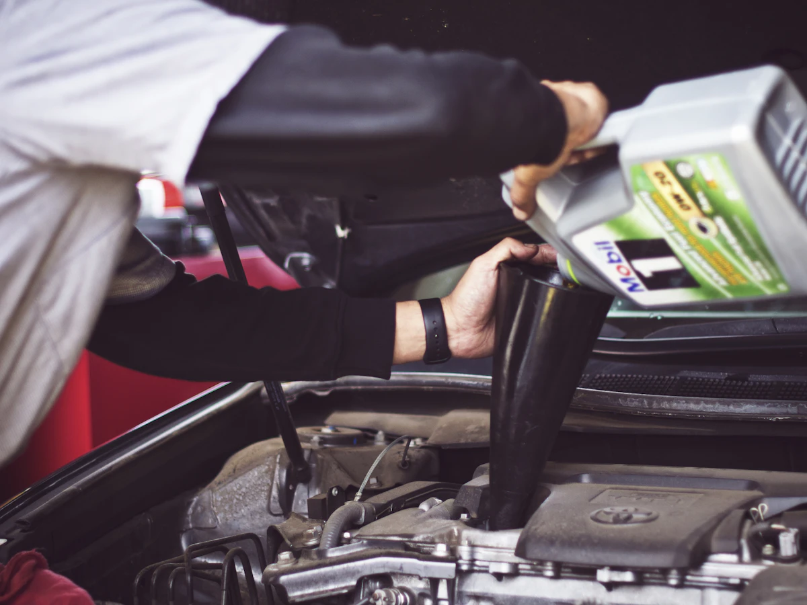

Pulsar, no esperar
Feedback en pointerdown, no al soltar.
scale(0.97) · 100ms ease-out
14 días gratis · sin tarjeta
Servicios, combustible, documentos y vencimientos en un solo lugar. Tu taller y tus conductores registran; tú ves el gasto real de la flota en tiempo real.
Sin tarjeta · Importa tu flota por CSV · Cancela cuando quieras
0km
Una foto, un tratamiento
Gris, sombras azul tinta y una luz cálida que entra por la derecha. Así una foto de motor, una de carretera y una de taller se sienten parte del mismo sistema —y nunca compiten con el texto.
El azul profundo sostiene la marca; el rojo carrera solo aparece donde hay energía o alerta: cifras, barras, CTA y estados. El gradiente rojo→ámbar es el único degradado del sistema, así que siempre significa lo mismo: esto importa ahora.
--ink#08131d
--blue#1d4a70
--signal#c03a2b
--gradenergía
--paper#f4f6f7
--amber#ffb03a

1 · OriginalColor y luz de la fuente, sin tocar.
2 · Duotono azulGris + tinte del azul de marca.
3 · Grade completoLuz de señal + grano. El estándar.
Feedback en pointerdown, no al soltar.
scale(0.97) · 100ms ease-out
El odómetro y el gasto se animan al entrar en pantalla.
900ms · easeOutCubic
La hoja sigue al dedo y se puede agarrar a media animación.
damping 0.8 · response 0.3
En el bolsillo
Buenos días,
Luis